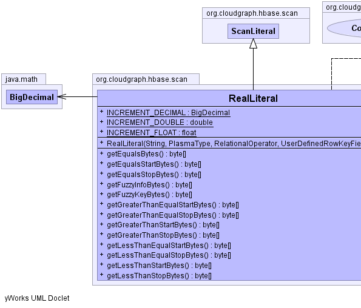
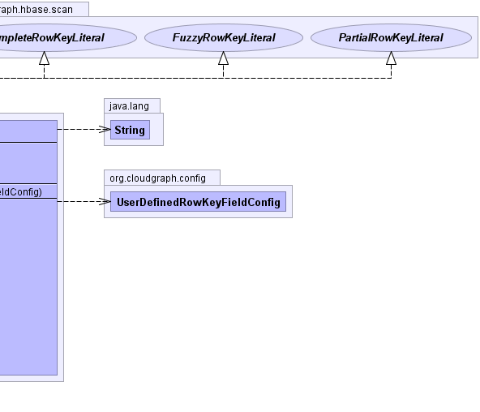

public class RealLiteral extends ScanLiteral implements PartialRowKeyLiteral, FuzzyRowKeyLiteral, CompleteRowKeyLiteral
FuzzyRowKeyLiteral supplying only default
key and info bytes.TableConfig,
HBaseDataConverter|  |  |
| Modifier and Type | Field and Description |
|---|---|
static java.math.BigDecimal |
INCREMENT_DECIMAL |
static double |
INCREMENT_DOUBLE |
static float |
INCREMENT_FLOAT |
charset, dataConverter, fieldConfig, HASH_INCREMENT, hashing, keySupport, literal, padding, property, relationalOperator, rootType, table| Constructor and Description |
|---|
RealLiteral(java.lang.String literal,
PlasmaType rootType,
RelationalOperator relationalOperator,
UserDefinedRowKeyFieldConfig fieldConfig) |
| Modifier and Type | Method and Description |
|---|---|
byte[] |
getEqualsBytes()
Returns the bytes used to represent an "equals" relational operator for a
specific composite row key field, under an HBase 'Get' operation for the
various optionally configurable hashing, formatting and padding features.
|
byte[] |
getEqualsStartBytes()
Returns the "start row" bytes used to represent "equals" relational
operator under an HBase partial row-key scan for this real (data flavor)
literal under the various optionally configurable hashing, formatting and
padding features.
|
byte[] |
getEqualsStopBytes()
Returns the "stop row" bytes used to represent "equals" relational operator
under an HBase partial row-key scan for this real (data flavor) literal
under the various optionally configurable hashing, formatting and padding
features.
|
byte[] |
getFuzzyInfoBytes() |
byte[] |
getFuzzyKeyBytes() |
byte[] |
getGreaterThanEqualStartBytes()
Returns the "start row" bytes used to represent "greater than equals"
relational operator under an HBase partial row-key scan for this real (data
flavor) literal under the various optionally configurable hashing,
formatting and padding features.
|
byte[] |
getGreaterThanEqualStopBytes()
Returns the "stop row" bytes used to represent "greater than equals"
relational operator under an HBase partial row-key scan for this real (data
flavor) literal under the various optionally configurable hashing,
formatting and padding features.
|
byte[] |
getGreaterThanStartBytes()
Returns the "start row" bytes used to represent "greater than" relational
operator under an HBase partial row-key scan for this real (data flavor)
literal under the various optionally configurable hashing, formatting and
padding features.
|
byte[] |
getGreaterThanStopBytes()
Returns the "stop row" bytes used to represent "greater than" relational
operator under an HBase partial row-key scan for this real (data flavor)
literal under the various optionally configurable hashing, formatting and
padding features.
|
byte[] |
getLessThanEqualStartBytes()
Returns the "start row" bytes used to represent "less than equals"
relational operator under an HBase partial row-key scan for this real (data
flavor) literal under the various optionally configurable hashing,
formatting and padding features.
|
byte[] |
getLessThanEqualStopBytes()
Returns the "stop row" bytes used to represent "less than equals"
relational operator under an HBase partial row-key scan for this real (data
flavor) literal under the various optionally configurable hashing,
formatting and padding features.
|
byte[] |
getLessThanStartBytes()
Returns the "start row" bytes used to represent "less than" relational
operator under an HBase partial row-key scan for this real (data flavor)
literal under the various optionally configurable hashing, formatting and
padding features.
|
byte[] |
getLessThanStopBytes()
Returns the "stop row" bytes used to represent "less than" relational
operator under an HBase partial row-key scan for this real (data flavor)
literal under the various optionally configurable hashing, formatting and
padding features.
|
getContent, getFieldConfig, getRelationalOperator, getStartBytes, getStopBytesclone, equals, finalize, getClass, hashCode, notify, notifyAll, toString, wait, wait, waitgetStartBytes, getStopBytespublic static final float INCREMENT_FLOAT
public static final double INCREMENT_DOUBLE
public static final java.math.BigDecimal INCREMENT_DECIMAL
public RealLiteral(java.lang.String literal,
PlasmaType rootType,
RelationalOperator relationalOperator,
UserDefinedRowKeyFieldConfig fieldConfig)
public byte[] getEqualsStartBytes()
getEqualsStartBytes in interface PartialRowKeyLiteralgetEqualsStartBytes in class ScanLiteralpublic byte[] getEqualsStopBytes()
getEqualsStopBytes in interface PartialRowKeyLiteralgetEqualsStopBytes in class ScanLiteralpublic byte[] getGreaterThanStartBytes()
getGreaterThanStartBytes in interface PartialRowKeyLiteralgetGreaterThanStartBytes in class ScanLiteralpublic byte[] getGreaterThanStopBytes()
getGreaterThanStopBytes in interface PartialRowKeyLiteralgetGreaterThanStopBytes in class ScanLiteralpublic byte[] getGreaterThanEqualStartBytes()
getGreaterThanEqualStartBytes in interface PartialRowKeyLiteralgetGreaterThanEqualStartBytes in class ScanLiteralpublic byte[] getGreaterThanEqualStopBytes()
getGreaterThanEqualStopBytes in interface PartialRowKeyLiteralgetGreaterThanEqualStopBytes in class ScanLiteralpublic byte[] getLessThanStartBytes()
getLessThanStartBytes in interface PartialRowKeyLiteralgetLessThanStartBytes in class ScanLiteralpublic byte[] getLessThanStopBytes()
getLessThanStopBytes in interface PartialRowKeyLiteralgetLessThanStopBytes in class ScanLiteralpublic byte[] getLessThanEqualStartBytes()
getLessThanEqualStartBytes in interface PartialRowKeyLiteralgetLessThanEqualStartBytes in class ScanLiteralpublic byte[] getLessThanEqualStopBytes()
getLessThanEqualStopBytes in interface PartialRowKeyLiteralgetLessThanEqualStopBytes in class ScanLiteralpublic byte[] getEqualsBytes()
getEqualsBytes in interface CompleteRowKeyLiteralpublic byte[] getFuzzyKeyBytes()
getFuzzyKeyBytes in interface FuzzyRowKeyLiteralpublic byte[] getFuzzyInfoBytes()
getFuzzyInfoBytes in interface FuzzyRowKeyLiteralCloudGraph® is a registered trademark of TerraMeta Software, Inc. Copyright © 2014 - All Rights Reserved.